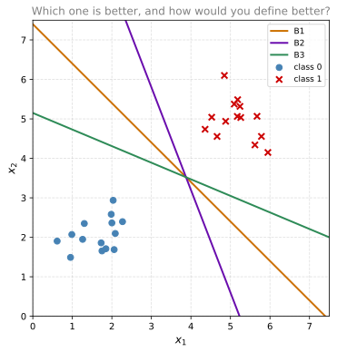
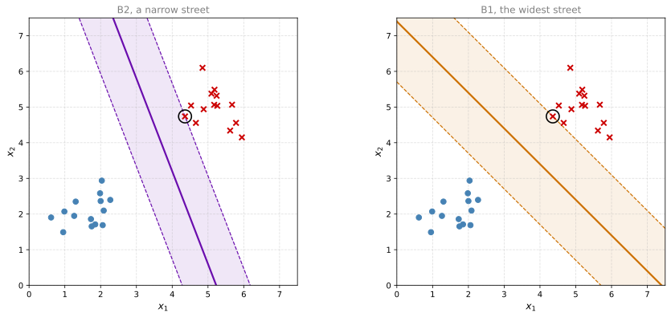
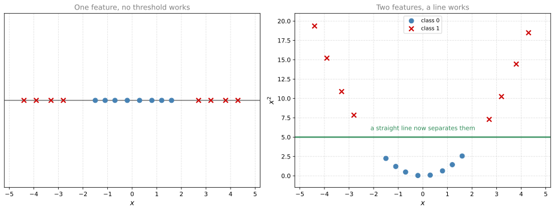

Support Vector Machines
machine-learning
classification
support-vector-machines
The widest-street idea behind support vector machines, which training points the boundary depends on, what C and the kernel trick do, and where SVMs still win.
NoteSupplementary page
Support vector machines are not part of the Machine Learning Specialization these notes follow. Andrew Ng’s original 2011 Coursera course taught them, and the 2022 rewrite dropped them to make room for neural networks and decision trees.
They are here anyway for two reasons. The first is that the notes already lean on them. The history of neural networks explains the second AI winter by saying that support vector machines simply worked better in the late 1990s, and the deep learning notes plot them as the traditional algorithm whose performance curve flattens out. Both arguments are hard to follow if you have never been told what an SVM is. The second reason is that they remain one of the better tools for small datasets, which is the situation most people actually find themselves in.
You already have a working classifier. Logistic regression takes a labeled dataset, finds parameters \(\vec{w}\) and \(b\), and draws a decision boundary through the data. Everything on one side is predicted positive and everything on the other side is predicted negative.
Here is a question that page never answered. Suppose your two classes are cleanly separable, so there is not one line that works but infinitely many. Which one should you choose?
Which Boundary Should You Pick?
Start with a dataset a straight line can separate perfectly.
All three lines get every training example right, so their training accuracy is identical at 100 percent and accuracy alone cannot rank them.
It is worth being careful about what that does and does not imply, because the obvious next sentence is wrong. You might expect logistic regression to have no opinion here at all. It does have one, but it arrives sideways.
On separable data the logistic cost never bottoms out. It keeps falling if you simply scale \(\vec{w}\) and \(b\) up by a positive constant, and that scaling does not move the boundary at all. It only makes the model more confident about points it already had on the right side. So the falling cost by itself is not evidence that the boundary is being pushed anywhere.
What does happen is subtler. As gradient descent runs and \(\vec{w}\) grows without limit, the direction it grows in settles down, and for separable data it settles on the direction of the maximum margin separator. This is known as the implicit bias of gradient descent, and implicit is the operative word. Nothing in the logistic cost function mentions the margin, measures it, or optimizes it. The margin is where the algorithm happens to drift, given enough time and a separable dataset.
A support vector machine states the goal outright instead. It defines the margin, maximizes it directly, and stops. That is the difference, and it is why the margin is worth studying on its own terms.
But they are clearly not equally good. Look at B2, the steep purple one. It passes close to several points. A new example that lands slightly to the left of one of those points crosses the boundary and gets classified the other way. The line is correct on the data you have and fragile on the data you do not have yet.
That observation is the whole idea behind support vector machines. Among all the boundaries that classify the training data correctly, prefer the one that stays as far as possible from the nearest examples.
Review Questions
1. Why does training accuracy fail to choose between the three lines?
TipAnswer
Because all three classify every training example correctly, so all three score 100 percent. Training accuracy measures performance on data you already have. What separates the three lines is how they will behave on data you do not have yet, which training accuracy cannot see.
Margin
Make the idea precise by widening each boundary into a street. Push a parallel line out from the boundary on each side until it touches the nearest training point. The distance between those two outer lines is the margin.

Now the comparison has a number attached. B1 fits a much wider street between the two classes than B2 does, so B1 is the better boundary. A support vector machine is the algorithm that finds the boundary with the widest street of all, which is why it is also called a maximum margin classifier.
The circled points are the ones the street edges touch. These are the support vectors, and they are where the method gets its name. Notice how few of them there are. Two or three points out of twenty-eight are doing all the work.
Margin Arithmetic
Writing this down turns the picture into something you can optimize.
The boundary is the set of points where a linear function equals zero, which is the same form logistic regression uses.
\[ \vec{w} \cdot \vec{x} + b = 0 \]
The two edges of the street are the parallel surfaces where that same function equals \(+1\) and \(-1\). The choice of \(1\) is a convention rather than a constraint, since scaling \(\vec{w}\) and \(b\) together rescales the function without moving the boundary.
\[ \vec{w} \cdot \vec{x} + b = +1 \qquad\text{and}\qquad \vec{w} \cdot \vec{x} + b = -1 \]
Training then demands that every example sit on the correct side of the street, outside the margin rather than inside it.
\[ \vec{w} \cdot \vec{x}^{(i)} + b \ge +1 \quad \text{when } y^{(i)} = +1 \qquad \vec{w} \cdot \vec{x}^{(i)} + b \le -1 \quad \text{when } y^{(i)} = -1 \]
Those two conditions are training constraints, not the prediction rule. Once the boundary is fixed, predicting on a new point only asks which side of the boundary itself the point falls on, and the boundary is where the function is zero.
\[ f(\vec{x}) = \operatorname{sign}(\vec{w} \cdot \vec{x} + b) \]
The distinction matters. A new point can land strictly inside the street, where the score is between \(-1\) and \(+1\), and it still gets a prediction. It just gets one the model is less confident about.
And the width of the street works out to a short expression.
\[ \text{Margin} = \frac{2}{\lVert \vec{w} \rVert} \]
That formula is the key to the whole method, because of what it says about the direction of the optimization. The margin is \(2\) divided by the length of \(\vec{w}\), so making the margin as large as possible is the same thing as making \(\lVert \vec{w} \rVert\) as small as possible, subject to every training point staying on its correct side of the street. A geometric goal that sounded awkward to optimize has turned into minimizing the length of a vector, which is an ordinary and well-behaved problem.
NoteLabels are \(-1\) and \(+1\) here
Everywhere else in these notes a binary label \(y\) is \(0\) or \(1\). Support vector machines conventionally use \(-1\) and \(+1\) instead. It is the same two classes with different names, and the reason for the change is that it makes the arithmetic above symmetric. The two street edges become \(+1\) and \(-1\) rather than something lopsided, and the condition “this point is on the correct side” collapses into the single expression \(y^{(i)}(\vec{w} \cdot \vec{x}^{(i)} + b) \ge 1\) for both classes at once.
Review Questions
1. Why does maximizing the margin turn into minimizing \(\lVert \vec{w} \rVert\)?
TipAnswer
Because the margin equals \(2 / \lVert \vec{w} \rVert\). The margin appears in the numerator of a fraction whose denominator is \(\lVert \vec{w} \rVert\), so the two move in opposite directions. Making \(\lVert \vec{w} \rVert\) smaller makes the margin wider, and the widest possible margin comes from the smallest possible \(\lVert \vec{w} \rVert\) that still keeps every point on its correct side.
1. What are support vectors?
TipAnswer
The training examples the boundary actually depends on. With a hard margin those are exactly the points sitting on the street edges. Once the margin is soft, they also include every point that ended up inside the street or on the wrong side of it, since the model paid a penalty for each of those and they pull on the boundary too.
Only Support Vectors Matter
This is the property that most distinguishes support vector machines from everything else in this course, and it is worth stating on its own.
Delete a training example that is not a support vector, retrain with everything else held fixed, and you get exactly the same boundary. The points comfortably inside their own class had no influence on where it went.
Once the margin is soft, the definition has to widen a little. A support vector is any example the trained model actually leans on, which means the ones on the street edges plus the ones that ended up inside the street or on the wrong side of it. Those violating points are not incidental. They are precisely the examples the model had to pay for, so they pull on the boundary too. In scikit-learn this set is what support_vectors_ reports, and on a dataset with real class overlap it is a substantial fraction of the training set rather than a handful.
Compare that with logistic regression, where every training example contributes something to the cost, so every example pulls on the boundary a little. Compare it with k-nearest neighbors, which has to keep the entire training set around forever in order to predict at all.
One caveat on the deletion result. It is a statement about the support vector machine itself, holding the features and the kernel settings fixed. Rerunning a whole pipeline is a different matter, because a pipeline like the one below refits its scaler on whatever rows survive, and removing a row shifts that scaler’s mean and spread slightly. Every point then lands at slightly different coordinates, so the boundary can move a little. The property belongs to the optimizer, not to the workflow wrapped around it.
Three practical consequences follow.
- A trained SVM stores only its support vectors. It discards the rest. How large that set is depends on how cleanly the classes separate. On neatly separable data it is a handful, and on the overlapping medical dataset fitted below it is 42 percent of the training set.
- It ignores points deep inside their own class and attends to points near the boundary. Correctly labeled examples far from the street contribute nothing, which is the opposite of the usual expectation and worth remembering when an SVM behaves strangely.
- A mislabeled example is expensive wherever it sits. It is tempting to conclude from the previous point that a wrong label deep inside a class is harmless. It is not. Mislabeling a point that sits far inside class \(0\) as class \(1\) turns it into a large margin violation, exactly the kind the soft margin charges the most for, so it becomes a support vector and drags the boundary toward itself.
Soft Margin and the Parameter C
Everything so far assumed the classes can be separated perfectly by a straight line. Real data almost never obliges. A few points sit on the wrong side, either because the classes genuinely overlap or because somebody mislabeled an example, and demanding a perfect split either fails outright or produces an absurdly narrow street contorted around one bad point.
The fix is to let the algorithm buy its way out. A soft margin SVM is allowed to place some points on the wrong side of the street, and it pays a penalty for each one. What it optimizes is a trade between two things it cannot both have.
- A wide street, which generalizes well.
- Few violations, which fits the training data well.
The parameter that sets the exchange rate is called C, and reading it correctly matters because its direction is the reverse of what the name suggests.
| C | What it means | Effect on the street | Failure mode |
|---|---|---|---|
| Small | Violations are cheap | Wide street, more points allowed inside or across it | Underfitting, high bias |
| Large | Violations are expensive | Narrow street contorted to keep points out | Overfitting, high variance |
If that table looks familiar, it should. C is regularization wearing a different label, and it runs the opposite way from the \(\lambda\) you already know. A large \(\lambda\) means heavy regularization and a simpler model, while a large \(C\) means light regularization and a more complex model. Setting it well is exactly the bias and variance problem from earlier in this course, and it is chosen the same way, by cross-validation rather than by staring at the training set.
Review Questions
1. A model has a very high training accuracy and a much lower cross-validation accuracy. Should you raise or lower C?
TipAnswer
Lower it. That gap is overfitting, which means high variance, and a large \(C\) is what produces a narrow contorted boundary that memorizes the training set. Lowering \(C\) makes violations cheaper, which widens the street and simplifies the boundary.
1. Why is it a mistake to think of C as behaving like \(\lambda\)?
TipAnswer
They point in opposite directions. Increasing \(\lambda\) increases regularization and simplifies the model. Increasing \(C\) decreases regularization and complicates the model, because a large \(C\) makes violations expensive and forces the boundary to bend around individual points.
Kernel Trick
There is still a real limitation. Everything above draws a straight line, and plenty of datasets have no straight line that will do.
Consider the simplest possible case, a single feature where one class sits in the middle and the other sits at both ends. No threshold on \(x\) separates them, because whichever point you pick, one of the outer groups ends up on the wrong side.

Adding a second feature, \(x^2\), lifts every point onto a parabola, and now a horizontal line separates them cleanly. Nothing about the data changed. It moved into a space where the straight-line method works, and a straight line in the new space is a pair of thresholds back in the old one.
That suggests an obvious strategy of adding lots of extra features and then running the linear method. The obvious strategy is also unusable, because the number of features you would need explodes. Adding all products of pairs and triples of the original features runs into the thousands quickly, and computing in that space is expensive.
The kernel trick is the observation that makes it work anyway. Written in the form that is actually solved, called the dual, the SVM optimization never refers to the coordinates of a point in the high-dimensional space. Every place a data point appears, it appears inside a dot product with another data point. The same is true of the prediction rule, which is a weighted sum of dot products between the new point and the stored support vectors.
That is the opening. A kernel function computes what such a dot product would have been in the high-dimensional space, directly from the original coordinates, without ever constructing the high-dimensional vectors. Since the dot products are the only thing anything needed, the vectors themselves never have to exist.
The payoff is that you get the boundary you would have got in a space with a huge number of dimensions while doing arithmetic only in the small original one. Common choices are the following.
- Linear. No transformation. Use it when the data is close to separable already, or when there are many more features than examples, which happens often with text.
- Polynomial. Adds products of features up to a chosen
degree. Curved boundaries of a controllable complexity. - Radial basis function (RBF), the usual default. Corresponds to a space with infinitely many dimensions, and produces smooth, closed, blob-shaped regions. Its parameter
gammasets how far the influence of a single training example reaches. A largegammamakes each point influence only its immediate neighborhood, which gives a wiggly boundary that overfits. A smallgammagives a smooth one.
So a tuned RBF SVM has two knobs, C and gamma, and both of them control the bias and variance trade in the same direction. Larger means more complex. That is why they are almost always tuned together on a grid rather than one at a time, as the code below sets up.
Review Questions
1. What does the kernel trick actually avoid computing?
TipAnswer
The coordinates of the data in the high-dimensional space. The optimization only ever needs dot products between pairs of points, and a kernel function computes what that dot product would have been directly from the original coordinates, so the huge feature vectors are never built.
1. Both C and gamma are large. What kind of boundary should you expect, and what should you check?
TipAnswer
A wiggly, contorted boundary that is probably overfitting. A large \(C\) makes violations expensive and a large gamma makes each training point influence only its immediate neighborhood, and both push toward complexity. Check the gap between training accuracy and cross-validation accuracy, and lower both if it is wide.
Where SVMs Fit
Support vector machines earned their reputation honestly, and then lost the top spot for reasons worth understanding rather than memorizing.
What they are good at.
- Small and medium datasets. With a few hundred to a few thousand examples, a tuned SVM is often the strongest thing you can fit, and it will beat a neural network of any size.
- Many features relative to examples. Text classification is the classic case, where you might have 20,000 word features and 2,000 documents. The margin idea handles that shape well.
- Clean, well-defined decision boundaries. When the classes really are separable with some transformation, the SVM finds it.
What they are bad at.
- Large datasets. Training time grows roughly with the square of the number of examples, sometimes worse, because the algorithm reasons about pairs of points. At a million examples this is not a practical method.
- Explaining themselves. You get a boundary and a set of support vectors, not a story. A decision tree tells you it split on chest pain type and then on maximum heart rate. An SVM tells you nothing you can repeat to a doctor.
- Raw unstructured data. Images, audio, and text in raw form need features to be engineered by hand before an SVM sees them. Learning the features is precisely what neural networks do for free.
That last point is the whole historical argument, and it connects directly to two other pages in these notes. When the neural network field went through its second winter in the late 1990s, SVMs were the reason. On the datasets and hardware of the time they gave better results with far less fiddling, and they came with a clean mathematical story about margins that neural networks could not match.
What reversed it was scale, not a flaw in the mathematics. The performance curve on the deep learning page shows a traditional algorithm improving as data grows and then flattening out, while large neural networks keep climbing. The SVM is that flattening curve. It was never beaten at the left-hand end of that graph, where most problems still live. It was overtaken at the right-hand end, once there was enough data and enough compute to get out there, and the right-hand end is where the money and the headlines went.
So the honest summary is that support vector machines did not turn out to be wrong. They turned out to be the better answer to a question that a lot of the field stopped asking.
Review Questions
1. You have 800 labeled examples and 40 features. Would you reach for an SVM or a deep neural network first?
TipAnswer
An SVM. At 800 examples you are far to the left on the performance curve, which is exactly where a large neural network has no advantage and where the SVM is often the strongest available model. A deep network here would mostly be an exercise in fighting overfitting.
1. Why did SVMs lose ground to neural networks, and why is “SVMs were wrong” the wrong way to describe it?
TipAnswer
They lost ground because they do not keep improving as the dataset grows, and because they need features engineered by hand for raw images, audio, and text, which is the job neural networks do for themselves. Neither is a flaw in the margin idea. The SVM was overtaken in the big-data regime, not refuted, and on small datasets it is still frequently the better model.
1. Why is an SVM a poor choice when a clinician has to justify the decision to a patient?
TipAnswer
Because it produces a boundary in a transformed space plus a list of support vectors, none of which translates into a reason a person can follow. A decision tree gives an explicit chain of conditions, which is why it is often preferred where the decision has to be defended even at some cost in accuracy.
Seeing It in scikit-learn
Everything above is one class in scikit-learn, and it is worth seeing the ideas land on real data rather than leaving them as geometry.
The dataset is the one the tree ensembles page already uses, 918 patients with eleven features and a yes-or-no heart disease label. Two preparation steps matter, and both follow from the geometry rather than from scikit-learn.
An SVM measures distances between points, so every feature has to be a number and the numbers have to be comparable in size. Categorical columns are therefore one-hot encoded, and the encoded features are scaled, since cholesterol runs into the hundreds while a yes-or-no column is zero or one and an unscaled distance would be almost entirely a statement about cholesterol. Putting the scaler in a Pipeline keeps it fitted on training data only, which is what stops the test set leaking into the transformation.
import pandas as pd
from sklearn.model_selection import train_test_split, cross_val_score
from sklearn.pipeline import make_pipeline
from sklearn.preprocessing import StandardScaler
from sklearn.svm import SVC
from sklearn.metrics import accuracy_score
RANDOM_STATE = 55
df = pd.read_csv("../../../media/heart.csv")
categorical = ['Sex', 'ChestPainType', 'RestingECG', 'ExerciseAngina', 'ST_Slope']
df = pd.get_dummies(df, prefix=categorical, columns=categorical)
features = [c for c in df.columns if c != 'HeartDisease']
X_train, X_test, y_train, y_test = train_test_split(
df[features], df['HeartDisease'], train_size=0.8, random_state=RANDOM_STATE)
# Scaling belongs inside the model, so it is refitted on each training split.
svm = make_pipeline(StandardScaler(), SVC(random_state=RANDOM_STATE))
svm.fit(X_train, y_train)
print("test accuracy: %.3f" % accuracy_score(y_test, svm.predict(X_test)))test accuracy: 0.891SVC defaults to the RBF kernel with \(C = 1\), so that single call is the soft-margin, kernelized method from the sections above. The two parameters worth tuning are the two this page introduced, and both are chosen by cross-validation rather than by looking at the test set.
print("cross-validation accuracy: %.3f"
% cross_val_score(svm, X_train, y_train, cv=5).mean())
# GridSearchCV over these two is the standard way to tune an RBF SVM.
# Larger C and larger gamma both mean a more complex boundary.
grid = {'svc__C': [0.1, 1, 10, 100], 'svc__gamma': ['scale', 0.01, 0.001]}cross-validation accuracy: 0.854Finally, the claim that only a few points matter is one line, and on this dataset it comes with a caveat worth seeing.
n_sv = svm.named_steps['svc'].support_vectors_.shape[0]
print("support vectors: %d of %d training examples (%.0f%%)"
% (n_sv, len(X_train), 100 * n_sv / len(X_train)))support vectors: 311 of 734 training examples (42%)Forty-two percent is not the handful the clean separable picture suggests, and the reason is the soft margin. These two classes genuinely overlap, so every point sitting inside the street counts as a support vector too. Delete the other 58 percent and refit with the same features and settings, and the boundary would not move.
That is the whole method in practice. Prepare the features so distances mean something, fit one estimator, tune two parameters by cross-validation, and read off which points the model leaned on.
References
- Boser, B. E., Guyon, I. M., & Vapnik, V. N. (1992). A training algorithm for optimal margin classifiers. In Proceedings of the fifth annual workshop on Computational learning theory (pp. 144-152). ACM. https://doi.org/10.1145/130385.130401
- Cortes, C., & Vapnik, V. (1995). Support-vector networks. Machine Learning, 20(3), 273-297. https://doi.org/10.1007/BF00994018